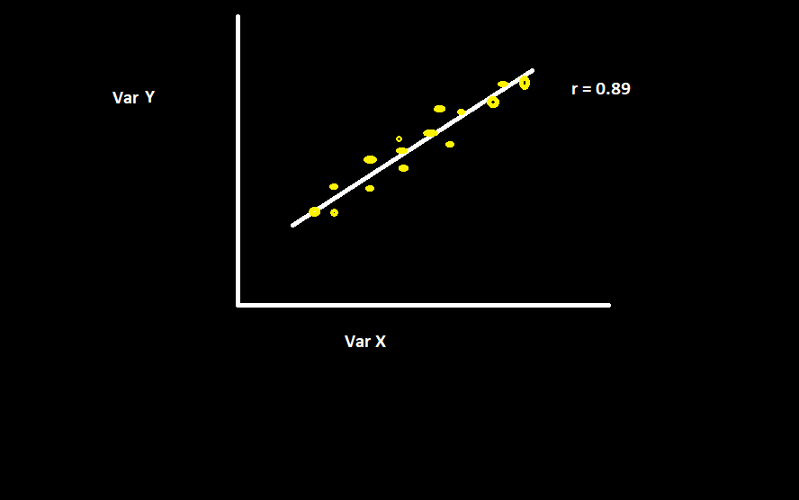
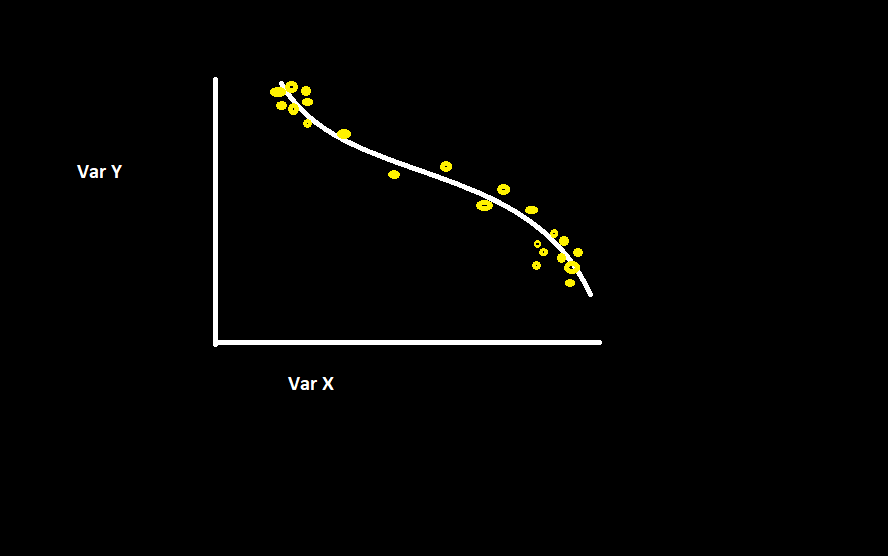

Correlation and Causation are similar words with very different meanings. We will discuss how these words are different moving forward.
Correlation is when two observations are related, whether it is directly or indirectly, positively or negatively, irrespective of the reasoning behind why the relation exists. It is important to note that correlation applies only when relationships are linear. So, for instance, i could say that there is a correlation between the state location in the US and average lemonade sales. The correlation might be strong; however, the reasoning is not focused on, that is where causation comes in.
Causation is concerned with the reasoning behind an observation. For example, if we agree through a visualization that there is a strong correlation between lemonade sales in the US as we go towards the southern states, we could then conclude that southern americans like lemonade more than northern americans. That might be a causation for that correlation; however, it might also not be the causation because conclusions cannot be based upon just one correlation. If, for instance, we find that all cold beverages are sold more in the southern states then it would become clear that the reasoning might not just be in like or dislike but in temperature of those locations (as southern states tend to be hotter than the northern ones) and therefore concluding that the reasoning for higher lemonade sales in the south is because of temperature, which might be a more realistic reasoning for a valid correlation. note that the "CAUSE" for the correlation to occur might be harder to spot, therefore correlation does not always mean causation for what we might be looking at. The secret may lie elsewhere and to discover it we need help of different ways of visualizing correlations, and to then verify the findings through experimentation.
If correlation does not mean causation then why must we look for correlation? Even though this is true, we should acknowledge that if a causation is true, then it must have a correlation, a cause leading to an effect. Therefore, correlations can give us good "jumping off points" in our investigations to unravel interesting stories. We can locate various patterns through different correlation visualization techniques and get as close as we can to the actual causation.
There are many different ways of visualizing correlations between variables and each way has its own utility. These ways are shown below:
This is the most basic form of data visualization and is just like any other graduated line graph. It is shown below:
Note: the R value shows how closely the 2 variables correlate: the closer the value is to 1, the more positively correlated, the closer the value is to -1, the more negatively correlated relationship we have.
If we divide the entire data set of a particular correlation into smaller sets and find and combine the slopes for each, we get the LOWESS line. It is used mainly when the distribution of data is uneven. It looks something like this:
The Scatterplot Matrix simply takes several different variables and compares them to one another in the simplest "scatterplot" form. It is an easy way to know relationships between multiple variables, which can help us disect how things may or may not be the causes for an occurrance for a correlation. an example is shown:

The diagonally arranged blocks in orange represent the standalone variables and the black blocks represent the variables being compared. Each black block would show an actual scatterplot showing some or no correlation between those two variables.
Diagonal lines are used to show deviations from a perfect direct positive or negative correlation. These are used mainly to easily see how much deviation occurs in a general trend from a perfect direct relation. an example is shown below:

In this way, different colored lines could show trends that don't follow perfect relationship for the same variables.